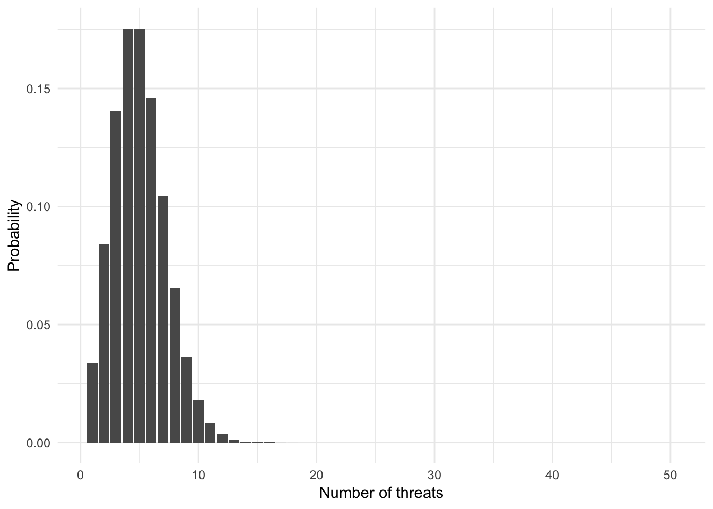

library(tidyverse)
library(broom)
library(patchwork)
options(digits = 3)
set.seed(1234)
theme_set(theme_minimal())\[\newcommand{\E}{\mathrm{E}} \newcommand{\Var}{\mathrm{Var}} \newcommand{\Cov}{\mathrm{Cov}}\]
Defining the function
\[ \begin{equation} X = \left \{ \begin{array} {ll} 0 \text{ if } (C, C, C) \\ 1 \text{ if } (T, C, C) \text{ or } (C, T, C) \text{ or } (C, C, T) \\ 2 \text{ if } (T, T, C) \text{ or } (T, C, T) \text{ or } (C, T, T) \\ 3 \text{ if } (T, T, T) \end{array} \right. \end{equation} \]In other words:
\[ \begin{eqnarray} X( (C, C, C) ) & = & 0 \\ X( (T, C, C)) & = & 1 \\ X((T, C, T)) & = & 2 \\ X((T, T, T)) & = & 3 \end{eqnarray} \]Probability mass function (PMF)
This applies to all outcomes
\[ \begin{eqnarray} p(X = 0) & = & P(C, C, C) = \frac{1}{8}\\ p(X = 1) & = & P(T, C, C) + P(C, T, C) + P(C, C, T) = \frac{3}{8} \\ p(X = 2) & = & P(T, T, C) + P(T, C, T) + P(C, T, T) = \frac{3}{8} \\ p(X = 3) & = & P(T, T, T) = \frac{1}{8} \end{eqnarray} \]\(p(X = a) = 0\), for all \(a \notin (0, 1, 2, 3)\)
pmf <- data_frame(x = 0:3,
y = c(1/8, 3/8, 3/8, 1/8))
pmf %>%
ggplot(aes(x, y)) +
geom_col() +
labs(title = "Probability Mass Function",
x = "Number of treated",
y = "Probability")Probability Mass Function: For a discrete random variable \(X\), define the probability mass function \(p(x)\) as
\[ \begin{eqnarray} p(x) & = & P(X = x) \end{eqnarray} \]Note that
\[\sum_x p_{X}(x) = 1\]
Can also add probabilities for smaller sets \(S\) of possible values of \(XS\)
\[\Pr(X \in S) = \sum_{x \in S} p_X (x)\]For example, if \(X\) is the number of heads obtained in two independent tosses of a fair coin, the probability of at least one head is
\[\Pr (X > 0) = \sum_{x=1}^2 p_X (x) = \frac{1}{2} + \frac{1}{4} = \frac{3}{4}\]
Suppose \(X\) is a random variable, with \(X \in \{0, 1\}\) and \(P(X = 1) = \pi\). Then we will say that \(X\) is Bernoulli random variable,
\[ \begin{eqnarray} p_X(k) & = & \pi^{k} (1- \pi)^{1 - k} \nonumber \end{eqnarray} \]
for \(k \in \{0,1\}\) and \(p(k) = 0\) otherwise.
We will (equivalently) say that
\[ \begin{eqnarray} Y & \sim & \text{Bernoulli}(\pi) \nonumber \end{eqnarray} \]
Suppose we flip a fair coin and \(Y = 1\) if the outcome is Heads.
\[ \begin{eqnarray} Y & \sim & \text{Bernoulli}(1/2) \nonumber \\ p(1) & = & (1/2)^{1} (1- 1/2)^{ 1- 1} = 1/2 \nonumber \\ p(0) & = & (1/2)^{0} (1- 1/2)^{1 - 0} = (1- 1/2) \nonumber \end{eqnarray} \]
bernouli_plot <- function(p){
data_frame(x = 0:1,
p = dbinom(x = x, size = 1, prob = p)) %>%
mutate(x = factor(x)) %>%
ggplot(aes(x, p)) +
geom_col() +
labs(title = "Bernouli PMF",
subtitle = bquote(pi == .(p)),
x = expression(x),
y = expression(P[X] (k)))
}
bernouli_plot(.5) +
bernouli_plot(.7) +
bernouli_plot(.3)Suppose \(X\) is a random variable that counts the number of successes in \(N\) independent and identically distributed Bernoulli trials. Then \(X\) is a Binomial random variable,
\[ \begin{eqnarray} p_X(k) & = & {{N}\choose{k}}\pi^{k} (1- \pi)^{n-k} \nonumber \end{eqnarray} \]
for \(k \in \{0, 1, 2, \ldots, N\}\) and \(p(k) = 0\) otherwise, and \(\binom{N}{k} = \frac{N!}{(N-k)! k!}\). Equivalently,
\[ \begin{eqnarray} Y & \sim & \text{Binomial}(N, \pi) \nonumber \end{eqnarray} \]
binomial_plot <- function(n, p){
data_frame(x = 0:n,
p = dbinom(x = x, size = n, prob = p)) %>%
mutate(x = factor(x)) %>%
ggplot(aes(x, p)) +
geom_col() +
labs(title = "Binomial PMF",
subtitle = bquote(n == .(n) ~ p == .(p)),
x = expression(x),
y = expression(P[X] (k)))
}
binomial_plot(10, .5)binomial_plot(10, .3)binomial_plot(100, .2)binomial_plot(100, .8)Suppose \(X\) is a random variable that counts the number of tosses needed for a head to come up the first time. Its PMF is
\[ \begin{eqnarray} p_X(k) & = & (1 - p)^{k-1}p, \quad k = 1, 2, \ldots \end{eqnarray} \]\[\sum_{k=1}^{\infty} p_X(k) = \sum_{k=1}^{\infty} (1 - p)^{k-1}p = p \sum_{k=1}^{\infty} (1 - p)^{k-1} = p \times \frac{1}{1 - (1-p)} = 1\]
geometric_plot <- function(p){
data_frame(x = 0:20,
p = dgeom(x = x, prob = p)) %>%
mutate(x = factor(x)) %>%
ggplot(aes(x, p)) +
geom_col() +
labs(title = "Geometric PMF",
subtitle = bquote(p == .(p)),
x = expression(x),
y = expression(P[X] (k)))
}
geometric_plot(.5)geometric_plot(.7)geometric_plot(.2)Generally referred to as event counts
Suppose \(X\) is a random variable that takes on values \(X \in \{0, 1, 2, \ldots, \}\) and that \(P(X = k) = p(k)\) is,
\[ \begin{eqnarray} p(k) & = & e^{-\lambda} \frac{\lambda^{k}}{k!}, \quad k = 0,1,2,\ldots \end{eqnarray} \]
for \(k \in \{0, 1, \ldots, \}\) and \(0\) otherwise. Then we will say that \(X\) follows a Poisson distribution with rate parameter \(\lambda\)
\[ \begin{eqnarray} X & \sim & \text{Poisson}(\lambda) \nonumber \end{eqnarray} \]Not enough time for the proof here (find it online), but \(E(X) = var(X) = \lambda\)
poisson_plot <- function(lambda, max_n = 10){
data_frame(x = 0:max_n,
p = dpois(x = x, lambda = lambda)) %>%
mutate(x = factor(x)) %>%
ggplot(aes(x, p)) +
geom_col() +
labs(title = "Poisson PMF",
subtitle = bquote(lambda == .(lambda)),
x = expression(x),
y = expression(P[X] (k)))
}
poisson_plot(2)poisson_plot(5.5)poisson_plot(78, max_n = 150)What is the probability the president will make ten or more threats?
\[ \begin{eqnarray} P(X \geq 10) & = & e^{-\lambda} \sum_{k=10}^{\infty} \frac{5^{k}}{k!} \\ & = & 1 - P(X< 10 ) \end{eqnarray} \]
data_frame(n = 1:50,
prob = dpois(n, 5)) %>%
mutate(ten = n > 10) %>%
ggplot(aes(n, prob, fill = ten)) +
geom_col() +
scale_fill_brewer(type = "qual", guide = FALSE) +
labs(x = "Number of threats",
y = "Probability")
The Poisson PMF with parameter \(\lambda\) is a good approximation for a binomial PMF with parameters \(n\) and \(p\)
\[e^{-\lambda} \frac{\lambda^{k}}{k!} \approx {{N}\choose{k}}\pi^{k} (1- \pi)^{n-k}, \quad \text{if } k \ll n\]
Using the binomial PMF
\[\frac{100!}{95! 5!} \times 0.01^5 (1 - 0.01)^{95} = 0.00290\]
Using the Poisson PMF with \(\lambda = np = 100 \times 0.01 = 1\)
\[e^{-1} \frac{1}{5!} = 0.00306\]
This could be a linear function of the form
\[Y = g(X) = aX + b\]
where \(a\) and \(b\) are scalarsAll outcomes in the sample space defined with a numerical value \(x\) for \(X\) also have a numberical value \(y = g(x)\) for \(Y\)
Consider spinning a wheel of fortune many times. At each spin, one of the numbers \(m_1, m_2, \ldots, m_n\) comes up with corresponding probability \(p_1, p_2, \ldots, p_n\), and this is your monetary reward from that spin. What is the amount of money that you “expect” to get “per spin”? The terms “expect” and “per spin” are a little ambiguous, but here is a reasonable interpretation.
Suppose you spin the wheel \(k\) times, and that \(k_i\) is the number of times that the outcome is \(m_i\). Then, the total amount received is \(m_1 k_1 + m_2 k_2 + \ldots + m_n k_n\). The amount received per spin is a simple average:
\[M = \frac{m_1 k_1 + m_2 k_2 + \ldots + m_n k_n}{k}\]
If the number of spins \(k\) is very large and we interpret probabilities as relative frequencies, we could anticipate that \(m_i\) comes up a fraction of times roughly equal to \(p_i\):
\[\frac{k_i}{k} \approx p_i, i = 1, \ldots,n\]
Thus, the amount of money you “expect” to receive is
\[M = \frac{m_1 k_1 + m_2 k_2 + \ldots + m_n k_n}{k} \approx m_1p_1 + m_2p_2 + \ldots + m_np_n\]
Define expected value (known as expectation or the mean) of a random variable \(X\), with PMF \(p_X\) as
\[ \begin{eqnarray} \E[X] & = & \sum_{x:p(x)>0} x p(x) \end{eqnarray} \]
where \(\sum_{x:p(x)>0}\) is all values of \(X\) with probability greater than 0
In words: for all values of \(x\) with \(p(x)\) greater than zero, take the weighted average of the values
Suppose \(X\) is number of units assigned to treatment, in one of our previous example.
\[ \begin{equation} X = \left \{ \begin{array} {ll} 0 \text{ if } (C, C, C) \\ 1 \text{ if } (T, C, C) \text{ or } (C, T, C) \text{ or } (C, C, T) \\ 2 \text{ if } (T, T, C) \text{ or } (T, C, T) \text{ or } (C, T, T) \\ 3 \text{ if } (T, T, T) \end{array} \right. \end{equation} \]
What is \(E[X]\)?
\[ \begin{eqnarray} \E[X] & = & 0\times \frac{1}{8} + 1 \times \frac{3}{8} + 2 \times \frac{3}{8} + 3 \times \frac{1}{8} \\ & = & 1.5 \end{eqnarray} \]
Gives us a measure of central tendency
Defined as the expected value of the random variable \((X - \E[X])^2\)
\[ \begin{align} \Var(X) &= \E[(X - \E[X])^2] \end{align} \]
Expected value rule for functions of random variables - let \(X\) be a random variable with PMF \(p_X\), and let \(g(X)\) be a function of \(X\). Then, the expected value of the random variable \(g(X)\) is given by
\[\E[g(X)] = \sum_{x} g(x) p_X(x)\]This allows us to rewrite our variance formula:
\[ \begin{align} \Var(X) &= \E[(X - \E[X])^2] \\ \Var(X) &= \E[X^2] - \E[X]^2 \end{align} \]
Suppose \(Y \sim \text{Bernoulli}(\pi)\)
\[ \begin{eqnarray} E[Y] & = & 1 \times P(Y = 1) + 0 \times P(Y = 0) \nonumber \\ & = & \pi + 0 (1 - \pi) \nonumber = \pi \\ \text{var}(Y) & = & E[Y^2] - E[Y]^2 \nonumber \\ E[Y^2] & = & 1^{2} P(Y = 1) + 0^{2} P(Y = 0) \nonumber \\ & = & \pi \nonumber \\ \text{var}(Y) & = & \pi - \pi^{2} \nonumber \\ & = & \pi(1 - \pi ) \nonumber \end{eqnarray} \]
What is the maximum variance?
\[ \begin{eqnarray} \text{var}(Y) & = & \pi - \pi^{2} \nonumber \\ & = & 0.5(1 - 0.5 ) \\ & = & 0.25 \end{eqnarray} \]
\[Z = \sum_{i=1}^{N} Y_{i} \text{ where } Y_{i} \sim \text{Bernoulli}(\pi)\]
\[ \begin{eqnarray} E[Z] & = & E[Y_{1} + Y_{2} + Y_{3} + \ldots + Y_{N} ] \\ & = & \sum_{i=1}^{N} E[Y_{i} ] \\ & = & N \pi \\ \text{var}(Z) & = & \sum_{i=1}^{N} \text{var}(Y_{i}) \\ & = & N \pi (1-\pi) \end{eqnarray} \]
Then,
\[ \begin{eqnarray} Y &\sim & \text{Bernoulli}(\pi) \end{eqnarray} \]
What is \(1\)’s expected utility from fighting a war?
\[ \begin{eqnarray} E[U(\text{war})] & = & (\text{Utility}|\text{win})\times P(\text{win}) + (\text{Utility}| \text{lose})\times P(\text{lose}) \\ &= & (B - c) P(Y = 1) + (- c) P(Y = 0 ) \\ & = & B \times p(Y = 1) - c(P(Y = 1) + P(Y = 0)) \\ & = & B \times \pi - c \end{eqnarray} \]
devtools::session_info()## Session info -------------------------------------------------------------## setting value
## version R version 3.5.1 (2018-07-02)
## system x86_64, darwin15.6.0
## ui X11
## language (EN)
## collate en_US.UTF-8
## tz America/Chicago
## date 2018-10-23## Packages -----------------------------------------------------------------## package * version date source
## assertthat 0.2.0 2017-04-11 CRAN (R 3.5.0)
## backports 1.1.2 2017-12-13 CRAN (R 3.5.0)
## base * 3.5.1 2018-07-05 local
## bindr 0.1.1 2018-03-13 CRAN (R 3.5.0)
## bindrcpp 0.2.2 2018-03-29 CRAN (R 3.5.0)
## broom * 0.5.0 2018-07-17 CRAN (R 3.5.0)
## cellranger 1.1.0 2016-07-27 CRAN (R 3.5.0)
## cli 1.0.0 2017-11-05 CRAN (R 3.5.0)
## colorspace 1.3-2 2016-12-14 CRAN (R 3.5.0)
## compiler 3.5.1 2018-07-05 local
## crayon 1.3.4 2017-09-16 CRAN (R 3.5.0)
## datasets * 3.5.1 2018-07-05 local
## devtools 1.13.6 2018-06-27 CRAN (R 3.5.0)
## digest 0.6.15 2018-01-28 CRAN (R 3.5.0)
## dplyr * 0.7.6 2018-06-29 cran (@0.7.6)
## evaluate 0.11 2018-07-17 CRAN (R 3.5.0)
## forcats * 0.3.0 2018-02-19 CRAN (R 3.5.0)
## ggplot2 * 3.0.0 2018-07-03 CRAN (R 3.5.0)
## glue 1.3.0 2018-07-17 CRAN (R 3.5.0)
## graphics * 3.5.1 2018-07-05 local
## grDevices * 3.5.1 2018-07-05 local
## grid 3.5.1 2018-07-05 local
## gtable 0.2.0 2016-02-26 CRAN (R 3.5.0)
## haven 1.1.2 2018-06-27 CRAN (R 3.5.0)
## hms 0.4.2 2018-03-10 CRAN (R 3.5.0)
## htmltools 0.3.6 2017-04-28 CRAN (R 3.5.0)
## httr 1.3.1 2017-08-20 CRAN (R 3.5.0)
## jsonlite 1.5 2017-06-01 CRAN (R 3.5.0)
## knitr 1.20 2018-02-20 CRAN (R 3.5.0)
## lattice 0.20-35 2017-03-25 CRAN (R 3.5.1)
## lazyeval 0.2.1 2017-10-29 CRAN (R 3.5.0)
## lubridate 1.7.4 2018-04-11 CRAN (R 3.5.0)
## magrittr 1.5 2014-11-22 CRAN (R 3.5.0)
## memoise 1.1.0 2017-04-21 CRAN (R 3.5.0)
## methods * 3.5.1 2018-07-05 local
## modelr 0.1.2 2018-05-11 CRAN (R 3.5.0)
## munsell 0.5.0 2018-06-12 CRAN (R 3.5.0)
## nlme 3.1-137 2018-04-07 CRAN (R 3.5.1)
## patchwork * 0.0.1 2018-09-06 Github (thomasp85/patchwork@7fb35b1)
## pillar 1.3.0 2018-07-14 CRAN (R 3.5.0)
## pkgconfig 2.0.2 2018-08-16 CRAN (R 3.5.1)
## plyr 1.8.4 2016-06-08 CRAN (R 3.5.0)
## purrr * 0.2.5 2018-05-29 CRAN (R 3.5.0)
## R6 2.2.2 2017-06-17 CRAN (R 3.5.0)
## Rcpp 0.12.18 2018-07-23 CRAN (R 3.5.0)
## readr * 1.1.1 2017-05-16 CRAN (R 3.5.0)
## readxl 1.1.0 2018-04-20 CRAN (R 3.5.0)
## rlang 0.2.1 2018-05-30 CRAN (R 3.5.0)
## rmarkdown 1.10 2018-06-11 CRAN (R 3.5.0)
## rprojroot 1.3-2 2018-01-03 CRAN (R 3.5.0)
## rstudioapi 0.7 2017-09-07 CRAN (R 3.5.0)
## rvest 0.3.2 2016-06-17 CRAN (R 3.5.0)
## scales 1.0.0 2018-08-09 CRAN (R 3.5.0)
## stats * 3.5.1 2018-07-05 local
## stringi 1.2.4 2018-07-20 CRAN (R 3.5.0)
## stringr * 1.3.1 2018-05-10 CRAN (R 3.5.0)
## tibble * 1.4.2 2018-01-22 CRAN (R 3.5.0)
## tidyr * 0.8.1 2018-05-18 CRAN (R 3.5.0)
## tidyselect 0.2.4 2018-02-26 CRAN (R 3.5.0)
## tidyverse * 1.2.1 2017-11-14 CRAN (R 3.5.0)
## tools 3.5.1 2018-07-05 local
## utils * 3.5.1 2018-07-05 local
## withr 2.1.2 2018-03-15 CRAN (R 3.5.0)
## xml2 1.2.0 2018-01-24 CRAN (R 3.5.0)
## yaml 2.2.0 2018-07-25 CRAN (R 3.5.0)This work is licensed under the CC BY-NC 4.0 Creative Commons License.